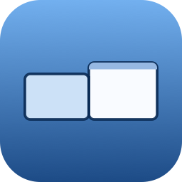
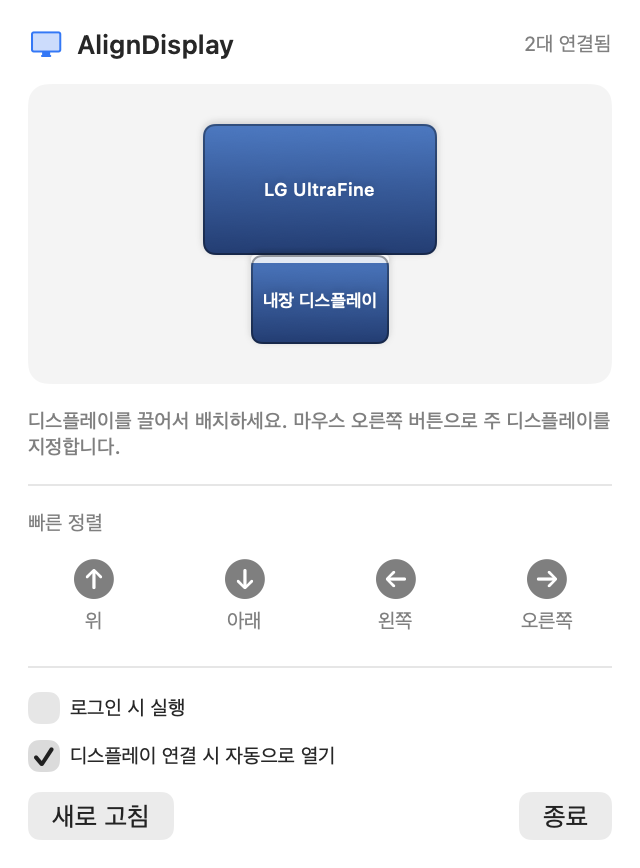
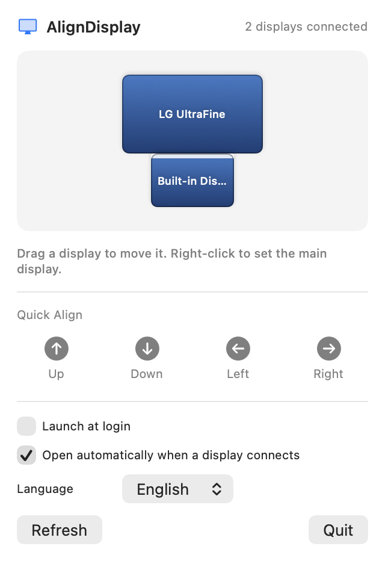
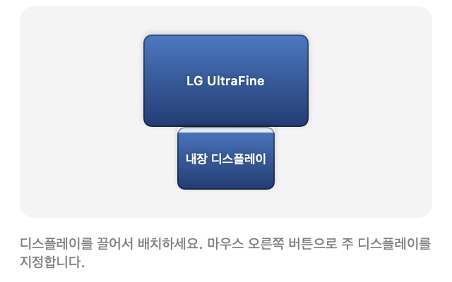

메뉴 막대에서 바로 외장 디스플레이를 끌어 배치합니다.
노트북을 모니터에 연결할 때마다 화면 배치가 어긋나 있으면, 시스템 설정 → 디스플레이 → 정렬까지 네 번을 들어가야 했습니다. AlignDisplay는 그 화면을 메뉴 막대 안으로 옮겨 놓습니다. 아이콘을 한 번 누르고, 디스플레이를 원하는 자리로 끌면 끝입니다.
디스플레이를 끌어 놓으면 이웃 화면 모서리에 자동으로 달라붙습니다. 겹치거나 떨어진 배치가 만들어지지 않습니다.
위 · 아래 · 왼쪽 · 오른쪽 버튼으로 외장 디스플레이를 한 번에 제자리에 놓습니다.
배치 화면에서 마우스 오른쪽 버튼을 누르면 메뉴 막대가 있는 주 디스플레이를 바꿀 수 있습니다.
새 디스플레이를 연결하면 배치 창이 알아서 떠서, 곧바로 정리하고 닫으면 됩니다.
체크 한 번으로 로그인 항목에 등록됩니다. Dock을 차지하지 않고 메뉴 막대에만 머무릅니다.
시스템 언어를 따라 자동으로 표시되고, 앱 안에서 English · 한국어를 직접 고를 수도 있습니다.
macOS가 공개한 디스플레이 설정 기능만 사용합니다. 접근성이나 화면 기록 권한을 요구하지 않습니다.



AlignDisplay는 어떤 개인정보도 수집하지 않습니다. 사용 기록을 모으거나 외부로 전송하지 않으며, 네트워크에 접속하지 않습니다. 앱이 저장하는 정보는 로그인 시 실행 여부와 자동 열기 여부 같은 설정값뿐이며, 이는 사용자의 Mac 안에만 저장됩니다.
디스플레이 이름과 해상도는 배치를 표시하기 위해 macOS로부터 읽어오지만, 화면에 보여주는 용도로만 쓰이고 저장하거나 전송하지 않습니다.
버그 제보, 기능 제안, 그 밖의 문의는 이메일로 보내주세요. 확인하는 대로 답장드립니다.